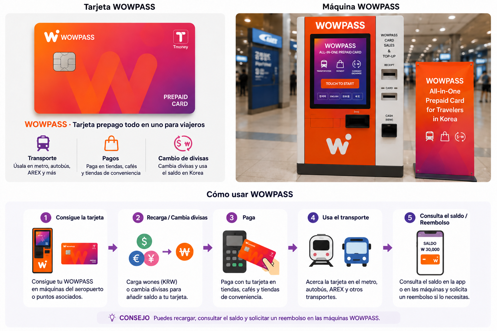
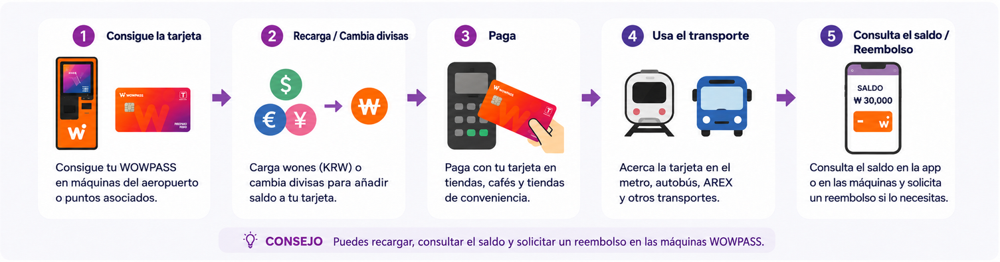

WOWPASS reúne una tarjeta prepago para compras, funciones de cambio de divisas y T-money en una sola tarjeta física. Lo importante es que no utiliza un saldo único: el dinero para pagar en tiendas y el saldo para viajar en metro o autobús se manejan por separado.
Si solo necesitas usar el transporte público, una T-money normal suele ser más sencilla. WOWPASS puede convenirte si también quieres pagar compras con un saldo prepago, utilizar recargas compatibles en divisas, retirar efectivo o administrar la tarjeta desde su aplicación.

La parte de pago y la de transporte comparten la misma tarjeta física, pero no el mismo saldo.
Para qué sirve WOWPASS
WOWPASS combina varias cosas que los visitantes extranjeros suelen gestionar por separado en Korea.
El saldo WOWPASS funciona como saldo de pago prepago para compras normales. La tarjeta también incluye una función de transporte T-money para autobuses y metro. El efectivo extranjero puede cambiarse y cargarse en máquinas WOWPASS compatibles, mientras que la app ofrece funciones adicionales de recarga y gestión de la tarjeta.
Esa combinación es su atractivo, pero también es donde empieza buena parte de la confusión.
El saldo para compras y el saldo T-money están en la misma tarjeta física, pero no se mezclan. Si cargas ₩50,000 para pagar compras, eso no significa que tengas ₩50,000 disponibles para viajar en metro. Debes recargar la función T-money por separado.
Para quien entiende esa diferencia, WOWPASS es bastante sencilla. Para quien espera que un único saldo pague absolutamente todo, el primer torno del metro puede ser una introducción desagradable.
Una tarjeta física, dos saldos separados
Esta es la parte que conviene entender antes de cargar dinero en la tarjeta.
Las compras normales usan el saldo prepago WOWPASS, mientras que el transporte utiliza el saldo T-money integrado.
Saldo WOWPASS
Saldo T-money
Uso principal
Tiendas, restaurantes y otros pagos físicos con tarjeta
Autobuses, metro y transporte compatible
Cómo se paga
Inserta el chip IC de la tarjeta en el terminal de pago
Acerca la tarjeta al lector de transporte
Cómo se carga
Máquina WOWPASS o métodos de recarga móvil compatibles
Recarga T-money por separado
¿Cargar el otro saldo añade dinero aquí?
No
No
Funciones de la app
Saldo, transacciones y gestión de la tarjeta
Consulta de saldo y compatibilidad actual con recargas desde la app
La propia guía de WOWPASS separa explícitamente estos dos saldos. Las compras normales usan el saldo prepago WOWPASS, mientras que el transporte utiliza el saldo T-money integrado.
La consecuencia práctica es sencilla: que un pago en una tienda funcione no te dice cuánto saldo de metro queda, y tener un saldo T-money suficiente no te dice nada sobre el saldo de pago.
Si un torno del metro indica que el saldo de transporte es demasiado bajo, añadir dinero solo al saldo de pago WOWPASS no resolverá el problema.
Dónde conseguir una tarjeta WOWPASS
En el aeropuerto de Incheon, lo importante es seguir el lugar exacto indicado en tu reserva. Algunas ubicaciones de tiendas de conveniencia del aeropuerto tienen quioscos de autoservicio WOWPASS, así que “recogida en el aeropuerto” no significa necesariamente que un empleado te entregue la tarjeta en el mostrador.
A 5 de octubre de 2026, las páginas oficiales de reserva de WOWPASS incluyen Airport CU Convenience Stores para las terminales 1 y 2 del aeropuerto de Incheon. El buscador oficial de quioscos también muestra máquinas WOWPASS en ubicaciones de tiendas de conveniencia del aeropuerto, incluidas CU y GS25. Las funciones varían según el punto; los tres ejemplos de abajo permiten recargar WOWPASS, pero no ofrecen cambio de divisas ni retirada de saldo.
El flujo de reserva también muestra por separado una opción Airport SKT Roaming Center para el paquete WOWPASS + Tmoney + SIM y la recogida Machine (Pre-booked) en estaciones de metro, hoteles, tiendas de conveniencia y otros lugares. Las páginas oficiales muestran actualmente ₩6,000 como precio estándar de la tarjeta y ₩5,500 para las opciones indicadas de reserva de solo tarjeta con descuento. Los precios, promociones, métodos de recogida y servicios de cada quiosco pueden cambiar, así que revisa los datos actuales de tu reserva y el buscador oficial antes de ir.
Después de recibir la tarjeta, regístrala en la app WOWPASS antes de cargar una cantidad grande. Comprueba qué saldo estás cargando y después añade lo que esperas utilizar. El registro en la app también se vuelve importante si más adelante pierdes la tarjeta.
Estos son ejemplos de quioscos WOWPASS en el aeropuerto de Incheon. Las funciones varían según la ubicación; los tres puntos mostrados permiten recargar WOWPASS, pero no ofrecen cambio de divisas ni retirada de saldo. Consulta el buscador oficial de quioscos para confirmar la ubicación y los servicios disponibles.
Cómo cargar dinero y cambiar divisas
Aquí hay dos conceptos distintos que es fácil mezclar: cambiar efectivo extranjero en una máquina WOWPASS y añadir saldo mediante la app.
WOWPASS anuncia actualmente recargas en efectivo en 16 monedas. Su servicio de recarga móvil también indica compatibilidad con tarjetas internacionales y monederos electrónicos, incluidas Mastercard, JCB y Visa a través de PayPal en el sitio oficial actual.
Cuando utilizas efectivo extranjero compatible en una máquina WOWPASS, el servicio lo convierte a wones coreanos y añade el valor resultante al saldo de pago WOWPASS.
La recarga móvil es una vía distinta. No estás introduciendo billetes extranjeros en una máquina; estás añadiendo saldo mediante un método de pago internacional compatible dentro de la app.
Esta diferencia importa al comparar el coste. El tipo de cambio y una comisión de recarga no son necesariamente lo mismo. Antes de cargar una cantidad grande, comprueba el importe real en KRW que recibirás y cualquier comisión que aparezca para ese método concreto, en lugar de asumir que todas las formas de cargar WOWPASS cuestan lo mismo.
Restricciones si recargas con PayPal: Según los términos actuales de Orange Square, el saldo de WOWPASS añadido mediante PayPal no se puede retirar en efectivo en los quioscos ni transferir a otro usuario de WOWPASS. Tampoco se puede solicitar un reembolso ni cancelar la recarga una vez realizada. Si existe la posibilidad de que necesites recuperar el dinero que te sobre, revisa las restricciones del método de recarga antes de añadir una cantidad grande.

Aquí hay dos conceptos distintos que es fácil mezclar: cambiar efectivo extranjero en una máquina WOWPASS y añadir saldo mediante la app.
Cómo pagar con WOWPASS
Para compras normales, WOWPASS funciona más como una tarjeta prepago coreana que como una tarjeta de transporte.
La guía oficial indica que el saldo de pago WOWPASS puede utilizarse en comercios físicos de Korea que acepten pagos con tarjetas de crédito o débito nacionales, incluidos algunos lugares donde una tarjeta extranjera puede no funcionar. Para esas compras, la instrucción oficial es insertar el chip IC de la tarjeta en el lector del comercio.
Eso es distinto de entrar al metro.
En una tienda, restaurante o cafetería, gastas del saldo WOWPASS. En un autobús o metro, acercas la tarjeta al lector y gastas del saldo T-money independiente.
También conviene recordarlo en los quioscos de autoservicio. Ver un símbolo de pago sin contacto no significa que todas las transacciones con WOWPASS deban hacerse acercando la tarjeta como si fuera T-money.
La propia publicidad de WOWPASS a veces usa expresiones muy amplias sobre su aceptación. Para planificar un viaje, una regla más segura es tratarla como una tarjeta prepago coreana para pagos físicos, no como una garantía de que todos los comercios online, sitios web extranjeros o terminales de pago poco habituales la aceptarán.
Si falla un pago en un comercio, ten otro método de pago disponible en lugar de mover dinero repetidamente entre los dos saldos.
Cómo retirar wones en efectivo
WOWPASS también permite convertir parte del saldo de pago en efectivo coreano mediante máquinas WOWPASS compatibles.
El sitio oficial actual indica un máximo de ₩100,000 por operación, con una comisión de ₩1,000 por retirada. También señala que se pueden realizar varias retiradas. Son condiciones vigentes del servicio y conviene volver a comprobarlas antes de depender de ellas en un viaje futuro.
Excepción importante: La opción de retirar efectivo en los quioscos no se aplica al saldo recargado mediante PayPal. Los términos actuales de Orange Square prohíben expresamente retirar en efectivo ese saldo en los quioscos WOWPASS.
La diferencia importante es que se trata de retirar saldo WOWPASS mediante el sistema WOWPASS. No es lo mismo que tener una cuenta bancaria coreana con acceso nacional a ATM.
Para un viajero que necesita efectivo coreano de vez en cuando, puede ser útil. Tiene menos sentido tratar WOWPASS como sustituto de todas las necesidades bancarias o de ATM durante una estancia larga.
Cómo funciona T-money dentro de WOWPASS
La función de transporte integrada en WOWPASS es una T-money real T-money.
La guía oficial de WOWPASS indica que su saldo T-money puede usarse en metros y autobuses coreanos y señala que hay que acercar la tarjeta a los lectores de transporte. La empresa también promociona actualmente su uso en otros medios de transporte, incluidos taxis compatibles.
La palabra importante es saldo.
Tener una tarjeta WOWPASS en la cartera no significa que la parte de transporte tenga saldo. El saldo T-money debe disponer de suficiente dinero por sí mismo.
La app puede mostrar actualmente el saldo de la tarjeta de transporte y permite recargarlo cuando se queda bajo.
Para quienes usan trenes y autobuses todos los días, resulta cómodo porque normalmente no hace falta una segunda tarjeta física T-money. Pero la ventaja es la comodidad, no que los saldos se vuelvan uno solo: todavía hay que recordar qué dinero paga cada parte del viaje.
Qué puedes hacer desde la aplicación WOWPASS
En la práctica, la app es mucho más útil de lo que puede parecer al principio.
Puede mostrar el saldo de pago WOWPASS y la actividad de las transacciones, y la empresa ofrece actualmente notificaciones de pago en tiempo real mediante la app. También permite consultar el saldo de transporte integrado y recargarlo.
La función más importante es menos llamativa: la seguridad de la tarjeta.
WOWPASS indica que una tarjeta perdida o robada puede pausarse en la app para proteger el saldo WOWPASS y que después se puede emitir una tarjeta de sustitución.
Es una buena razón para registrar la tarjeta física en la app poco después de recibirla en lugar de esperar a que ocurra un problema.
La app también permite actualmente transferir saldo entre usuarios de WOWPASS. Puede ser cómodo para amigos que viajan juntos, pero es secundario frente a las funciones básicas de controlar el gasto, gestionar la tarjeta y proteger el saldo de pago.
Qué hacer si pierdes tu tarjeta
Perder una tarjeta de viaje es molesto. Perder una tarjeta de viaje con un saldo prepago grande es más serio.
Si desaparece tu WOWPASS, la primera acción útil es abrir la app y pausar la tarjeta. WOWPASS indica actualmente que esto protege el saldo WOWPASS restante y permite emitir una tarjeta de sustitución.
Si pierdes la tarjeta, los dos saldos se manejan de forma distinta. Una tarjeta de reemplazo te permite volver a usar el saldo restante para pagos con WOWPASS, pero no se puede recuperar el saldo T-money de la tarjeta perdida. WOWPASS indica actualmente una tarifa de ₩3,000 por el reemplazo de la tarjeta.
Es otra razón para no cargar mucho más dinero del que esperas utilizar.
Qué revisar antes de salir de Corea del Sur
Una tarjeta WOWPASS puede terminar el viaje con dinero en dos lugares: el saldo de pago WOWPASS y el saldo de transporte T-money.
Esos saldos no deben tratarse como un único reembolso.
La guía oficial de uso de WOWPASS ofrece funciones separadas para retirar saldo WOWPASS y reembolsar T-money, reflejando la misma estructura de dos saldos que se aplica durante el viaje.
Antes del último trayecto al aeropuerto, mira los dos saldos por separado.
Si todavía necesitas el metro o transporte al aeropuerto, deja suficiente saldo en la parte T-money para ese trayecto. Si queda demasiado dinero en el saldo de pago WOWPASS, consulta las instrucciones actuales de retirada antes de llegar al aeropuerto.
Evita dejarlo para los últimos minutos antes de salir. Un punto de reembolso o retirada de efectivo puede no estar donde esperas.
Problemas frecuentes al usar WOWPASS
«Cargué dinero en WOWPASS, pero el metro dice que no tengo saldo».
Lo más probable es que hayas cargado el saldo de pago WOWPASS, no el saldo T-money integrado. Son independientes. Mira el saldo de transporte en la app y añade dinero a esa parte si hace falta.
«Mi reserva indica una tienda de conveniencia del aeropuerto: ¿debo recogerla en el mostrador?»
No des por hecho que un empleado te entregará la tarjeta en el mostrador. Algunas ubicaciones de tiendas de conveniencia del aeropuerto de Incheon tienen quioscos de autoservicio WOWPASS. Sigue las instrucciones exactas de tu reserva y confirma la ubicación actual en el buscador oficial, porque la instalación y las funciones disponibles pueden variar según el punto.
«Pensé que cargar efectivo extranjero y recargar desde la aplicación era lo mismo».
Ambas opciones añaden saldo utilizable, pero la vía de carga es distinta. El efectivo extranjero compatible se gestiona mediante el proceso de cambio de la máquina; las tarjetas internacionales o monederos electrónicos compatibles pueden utilizarse mediante las opciones actuales de recarga móvil.
«Pude viajar en metro, pero no pagar en una tienda».
El metro utilizó la función T-money. La tienda utilizó la función prepago WOWPASS. Comprueba primero el saldo correcto. Si el saldo es suficiente y el comercio aun así no puede procesar la tarjeta, usa otro método de pago en lugar de asumir que porque funcionó en transporte todos los pagos en comercios deben funcionar.
«Acerqué la tarjeta al lector y no pasó nada».
Para compras normales con WOWPASS, la instrucción oficial es insertar el chip IC en el lector de tarjetas. Acercar la tarjeta es el comportamiento para transporte.
«Perdí mi tarjeta».
Suspende la tarjeta en la app de WOWPASS lo antes posible. Con una tarjeta de reemplazo puedes volver a usar el saldo restante para pagos con WOWPASS, pero no recuperar el saldo T-money de la tarjeta perdida. WOWPASS indica actualmente una tarifa de ₩3,000 por el reemplazo. Si no puedes suspender la tarjeta desde la app, comunícate con el servicio de soporte de WOWPASS.
«Me voy de Corea del Sur y todavía tengo dinero en ambos saldos».
Trátalos por separado. La parte de pago WOWPASS tiene su propio proceso de retirada, mientras que T-money tiene su propio proceso de reembolso. Comprueba ambos antes del último trayecto al aeropuerto.
Cuándo te conviene WOWPASS
WOWPASS resulta más útil cuando coinciden varios problemas.
Un viajero que piensa usar transporte público, quiere una tarjeta prepago coreana para compras diarias y además busca una forma cómoda de convertir efectivo extranjero compatible o añadir dinero desde la app puede obtener un valor real llevando una sola tarjeta física en lugar de gestionar cada parte por separado.
También puede encajar con viajeros que prefieren asignar un presupuesto de viaje definido a un saldo prepago en vez de exponer su tarjeta de crédito extranjera principal en cada compra pequeña.
La utilidad es mucho menor si tu tarjeta extranjera ya funciona de forma fiable en Korea y solo necesitas una tarjeta de transporte. En ese caso, añadir WOWPASS significa otra app, otro saldo y otro sistema de tarjeta que entender.
Un visitante que pasa tres días en Seoul y solo necesita el metro no obtiene automáticamente más valor por tener más funciones.
¿WOWPASS o una tarjeta T-money normal?
Una tarjeta T-money normal cumple una función importante con muy poca configuración: el transporte.
WOWPASS integra T-money dentro de un producto de pago más amplio. Puede evitarte llevar tarjetas separadas para pagos y transporte, pero la comodidad es mayor solo si también piensas utilizar sus funciones de pago, cambio de divisas, retirada de efectivo o gestión desde la app.
Si la decisión sigue reduciéndose a esas dos tarjetas, consulta la guía T-money vs WOWPASS para ver la comparación completa en lugar de repetir aquí lo mismo.
Para viajeros que ya saben que solo necesitan transporte público: Guía de T-money
Preguntas frecuentes sobre WOWPASS
¿WOWPASS es lo mismo que T-money?
No. WOWPASS es una tarjeta de pago prepago para visitantes extranjeros que también incluye una función de transporte T-money. El saldo de pago WOWPASS y el saldo T-money son independientes.
¿Puedo usar WOWPASS en autobuses y metro?
Sí. La función T-money integrada puede usarse en el transporte público coreano, pero el saldo T-money debe cargarse por separado del saldo de pago WOWPASS.
¿Necesito otra tarjeta T-money si tengo WOWPASS?
Normalmente no para el uso habitual de autobuses y metro. WOWPASS ya incluye la función de transporte T-money. Una tarjeta T-money separada puede seguir siendo más sencilla si el transporte es la única función que necesitas.
¿Puedo pagar el metro con el saldo que cargué para compras en WOWPASS?
No automáticamente. El dinero del saldo de pago WOWPASS y el dinero del saldo T-money son independientes. Comprueba el saldo de transporte antes de depender de la tarjeta para un trayecto.
¿Puedo usar WOWPASS en tiendas y restaurantes?
La guía oficial indica que el saldo de pago WOWPASS puede utilizarse en comercios físicos de Korea que acepten pagos con tarjetas de crédito o débito nacionales. Los pagos normales se realizan insertando el chip IC de la tarjeta.
¿Puedo usar WOWPASS para compras en línea?
No supongas que WOWPASS funcionará en una tienda en línea solo porque la aceptan en un comercio físico. La guía oficial explica su uso para compras presenciales. Si necesitas pagar en sitios coreanos, consulta la guía de Korea Inside sobre pagos en línea.
¿Puedo cambiar efectivo extranjero con WOWPASS?
WOWPASS admite actualmente recargas en efectivo en 16 monedas mediante su servicio, sujeto a las normas vigentes de las máquinas y las monedas. Comprueba el importe del cambio que se muestra antes de confirmar la operación.
¿Puedo recargar WOWPASS con una tarjeta extranjera?
WOWPASS anuncia actualmente recargas móviles con tarjetas internacionales y monederos electrónicos, y en su sitio oficial aparecen Mastercard, JCB y Visa a través de PayPal. Comprueba en la app la disponibilidad y las comisiones actuales antes de cargar una cantidad grande. Según los términos actuales de Orange Square, el saldo recargado mediante PayPal no se puede retirar en efectivo en los quioscos ni transferir a otro usuario de WOWPASS. Tampoco se puede obtener un reembolso ni cancelar la recarga una vez realizada.
¿Puedo conseguir WOWPASS en el aeropuerto de Incheon?
Sí. Las páginas oficiales de reserva actuales incluyen Airport CU Convenience Stores para las terminales 1 y 2, y el buscador oficial muestra quioscos WOWPASS en ubicaciones de tiendas de conveniencia del aeropuerto como CU y GS25. También aparece por separado una opción Airport SKT Roaming Center con WOWPASS + Tmoney + SIM Package. Consulta tu reserva y el buscador actual para confirmar la ubicación exacta, el método de recogida y las funciones disponibles.
¿Cuánto cuesta una tarjeta WOWPASS?
En esta revisión del 5 de octubre de 2026, las páginas oficiales de reserva muestran ₩6,000 como precio estándar de la tarjeta y ₩5,500 para las opciones indicadas de reserva de solo tarjeta con descuento. Los precios y las promociones pueden cambiar.
¿Puedo retirar efectivo en wones con WOWPASS?
Sí. El sitio oficial actual indica que las máquinas WOWPASS permiten retirar KRW del saldo de la tarjeta, actualmente hasta ₩100,000 por retirada con una comisión de ₩1,000. Vuelve a comprobar la norma vigente antes del viaje, ya que las condiciones del servicio pueden cambiar. Excepción importante: el saldo recargado mediante PayPal no se puede retirar en efectivo en los quioscos WOWPASS.
¿Qué hago si pierdo mi tarjeta WOWPASS?
Si la tarjeta está registrada en la app, WOWPASS permite actualmente pausarla para proteger el saldo WOWPASS y ofrece un proceso de sustitución. Después del reemplazo, puedes volver a utilizar el saldo restante para pagos con WOWPASS, pero el saldo T-money de la tarjeta perdida no se puede recuperar. La tarifa de reemplazo indicada actualmente es de ₩3,000.
¿Conviene WOWPASS para un viaje corto?
Puede merecerla, pero la duración del viaje importa menos que la forma en que piensas pagar. Si quieres combinar funciones de pago, transporte y cambio de divisas, puede ser útil incluso en un viaje corto. Si solo necesitas autobuses y metro, una tarjeta T-money normal es más sencilla.
Los tipos de cambio, las comisiones, los lugares de recogida, los métodos de carga compatibles y las normas del servicio pueden cambiar. Para cualquier cuestión relacionada con dinero o una máquina concreta, la app WOWPASS o el sitio oficial actual deben tener prioridad sobre una captura de pantalla o publicación de viaje antigua.